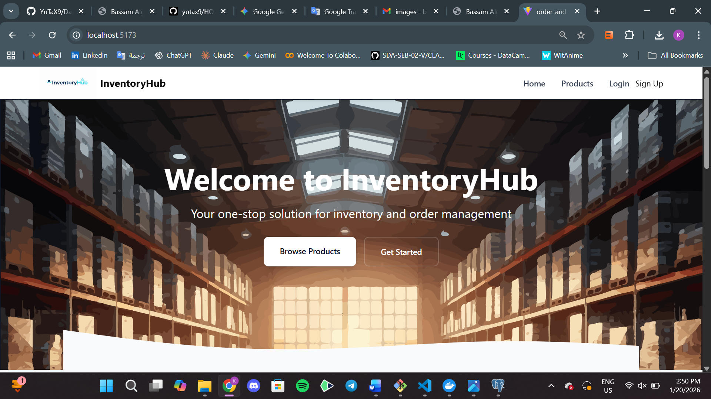
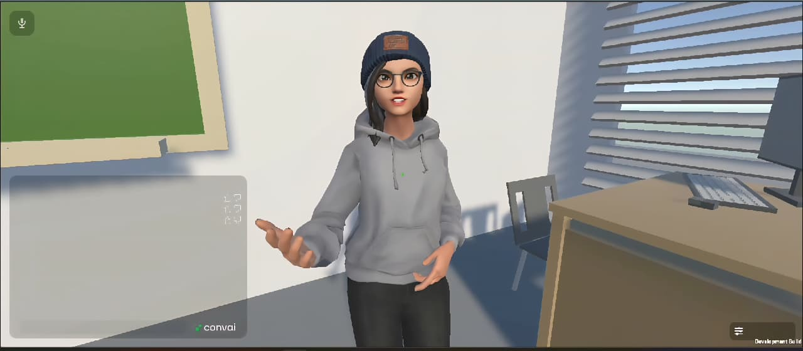
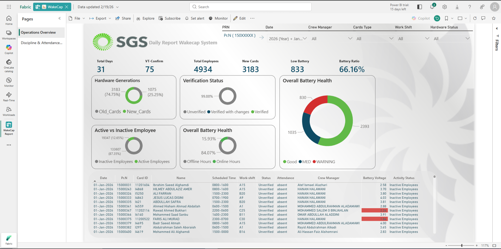
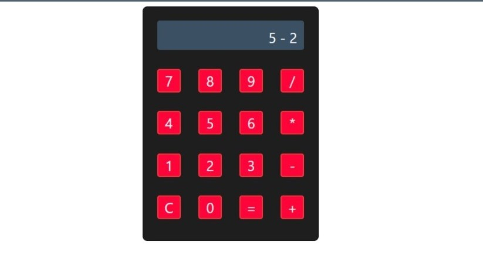

Inventory & Order Management System
Full-stack platform with 25+ REST API endpoints and an authenticated admin dashboard that tracks stock in real time. Queries optimised, deployed with Docker.
Jeddah, Saudi Arabia
Automation Engineer and Computer Science graduate. Today I run OTA deployments for Lucid Motors vehicles; before that I built automated reporting at Saudi Ground Services and an AI chatbot prototype at Saudi National Bank.
I'm a Computer Science graduate (University of Jeddah, 2025) and a Software Engineering bootcamp alumnus (Saudi Digital Academy × General Assembly, 480 hours). I work where software engineering, data and automation meet: building things that run without anyone watching them.
My focus is turning AI and data insights into stable, scalable applications. I hold the Certified Data Management Professional (CDMP) credential and work in Arabic (native) and English.

Full-stack platform with 25+ REST API endpoints and an authenticated admin dashboard that tracks stock in real time. Queries optimised, deployed with Docker.

VR language tool with real-time AI conversational feedback. Figma-designed UI lifted engagement by 30% in trials.

Operational reporting with interactive KPIs, built on a data model and DAX measures.

Account handling, deposits, transfers and overdraft protection with dynamic fees, built on encapsulation and inheritance and covered by unit tests.
Open to automation, data and full-stack roles. The quickest way to reach me is email.